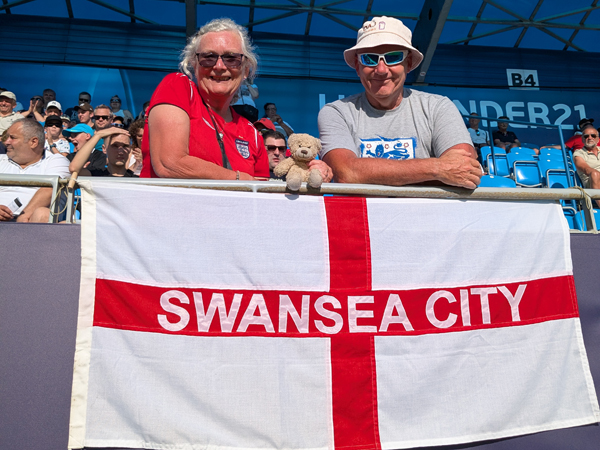
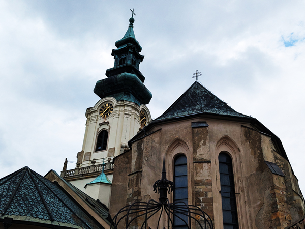

Sunday 15th June - England U21 v Slovenia U21 We got up, had a few trips to get everything to the car and left the apartment just after 10:00. We drove out of Komárno and started heading North towards Nitra where England will play there next two games. We stopped at a Tesco to buy breakfast and ate it at a particularly un-scenic picnic spot.
The driving part of the journey took just over an hour and we found our apartment shortly after midday. The apartment is about half an hours walk from the centre but is very nice and will be ideal for the next four nights. Steve came up with us but is staying the other side of town. He headed off to find his apartment while we were unloading the car.
After getting everything into the apartment, we finished yesterdays pizza and then headed into town. We had a walk round the football ground and then started looking for a pub. We were taking photos of the Nitra Gallery when we spotted Agaty Pub. This was one of the craft beer pubs I had thought about going to anyway and it had a very nice looking beer garden so we went in and got a table. We stayed in there until it was time to go to the game. Steve joined us and there were plenty of other England fans in there as well. For the first time since we have been going to the Under 21 tournaments, there were a lot more England fans around than fans of our opponents and we were not going to be out-numbered.

We left the pub at 5:30 for a 6:00 kick-off. The ground was only a 10 minute walk away. It had been very hot all day and it was still far too warm to play football by this time. We had very good seats near the halfway line but were unfortunately in the sun for the whole game. The game was no-where near as good as the one on Thursday but a point should be enough to get us through to the quarter-finals.
After the game we walked back to the centre. We struggled to find anywhere with good beer that was also serving food so after one drink in ZanziBar, we went and bought kebabs. We then had an enjoyable few hours in Beer Time before walking back to the apartment. Got back just before 1am.
Monday 16th June For the first time since leaving home, we had a couple of days without a lot to do. We are staying in the same place until after England's final group game here on Wednesday. We had arranged to go down to Steve's apartment in the centre of town for breakfast and we cycled down there when our washing machine had finally finished.
There are not too many sights in Nitra but it does have a castle on a hill fairly close to the centre. After eating, we walked to the base of the hill next to Agaty Pub and climbed the slope up to the top. At the top there were a castle with a small cathedral in it. Nothing quite on the scale of Carcassone but it was all nice enough and it was worth walking up for the views of the city and football ground.

We walked back down and wandered through the pedestrianised area and back to Steve's looking at a couple of restaurants on the way. We arranged to meet up again later and then Roz and I cycled back up to our apartment.
After showers, we walked back into town. We met Steve at Beer Time and proceeded to get quite pissed very quickly. The 6% IPA was probably the nicest beer we have had in Slovakia and it went down very easily. Neither of us had eaten much today and so drinking strong beer at that speed was never going to end well. After a few drinks we headed to Ristorante Boccaccio, an Italian restaurant we had looked in earlier.
This had looked a very nice place to eat and the food was very good. However, the service was as bad as anywhere I can remember eating. It took ages for them to bring anything and Roz's pizza appeared after Steve and I had finished eating. We did get free drinks from them and Roz got to take away her pizza without paying for it which just about made up for it all. It was still quite an enjoyable meal. We had got through a couple of bottles of wine by the time we had finished which added to the drunkenness.
We went for another couple of drinks in Beer Time and then left Steve chatting to a local couple. We managed to order a Bolt taxi to get us back home and got back at about 10:45.
Tuesday 17th June Woke up to discover that Ollie was missing and it looks as if he was left in Komárno. A sad start to the day.